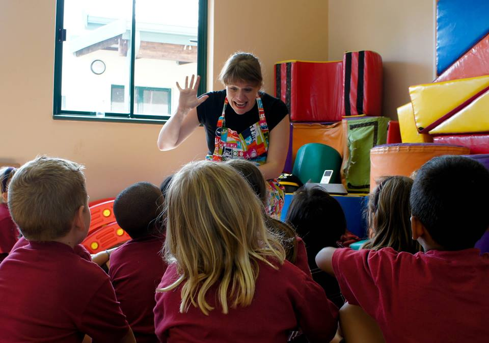
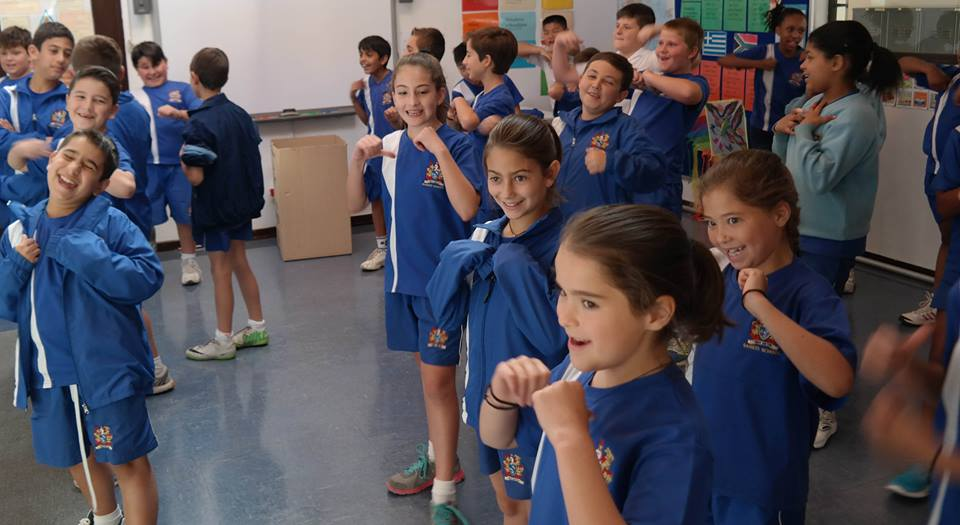
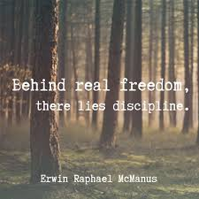

Buzz Blog
I graduated from University in 2005 and ever since everything that I have engaged with professionally, has involved children of a Pre-Primary and Primary School age. I have taught thousands of kids, with my very first job involving the weekly teaching of 500 children across the school as a specialist teacher of the creative arts. I have taught across South Africa and the United Kingdom with much of the workshops I facilitate involving 30 children whom I have never met prior. When you have, sometimes, as little as 30 minutes to capture their attention, teach them something and truly inspire very young children, discipline becomes your firm friend. I have never been afraid to discipline young, boisterous, lively crowds of little ones and am happy to say that it has never involved raising my voice at a child, shouting or threatening.
My organization employs many young facilitators and teachers. After basic training, they are expected to handle big groups of children and the most common initial hurdle most of them face is: low status. Children can actually be quite intimidating and they will automatically test and push boundaries. It is a natural part of how they explore their worlds and assert their personalities. Many make the mistake to ask the child to listen or follow the instruction, leaving the option to the child. Some (often subconsciously) become clouded by a need for the child’s approval. I firmly believe that children need boundaries within which they can feel free to explore but these must be firmly insisted on. Some of us need to “fake it until we make it,” if we don’t naturally feel like the absolute Alpha, projecting ourselves in this way. Act like the Alpha dog would. Children will actually feel safer and follow far more readily when it is unmistakable who the leader is.
Every child, not one excluded, will work harder for your praise than to avoid reprimand. Adults are wired this way, and children are no different. In fact, these pure emotions, are amplified. When you spot the tiniest bit of good effort or result in a young child, take a moment to make a big deal out of it. The younger the kid, the bigger the deal! Especially with those little ones who test your patience more or are harder to handle. When a child feels that they are making you happy, they will automatically want more of the feel-good and avoid your disappointment (as a result of bad behaviour) more.
We use high fives, hugs and shout-outs of amazement for every little victory and it saves us bundles of time that we would have wasted on reprimand or threat. Sometimes, it may not feel that way, but there is always something (about every child) to celebrate. In groups of children, I also believe that best manners and behaviour of individuals be pointed out and applauded. The quickest way to make that little guy in your class sit still is by pointing out how beautifully still the child either side of him is sitting. Healthy competition. Keep it up for a while, I promise, it always works.

Many people make the mistake to discipline too quickly or without explanation. It almost defeats the purpose of reprimand entirely. A little person will need to understand clearly what the boundaries are before they can be “in trouble” for crossing it. This may take more patience, effort and time in the short term to keep reinforcing the rules, your expectations and the boundaries but will save you so, so much time in the long run.
When and if the child does then need to be disciplined with a time-out or a withheld treat, again, making sure that even the littlest person understands how they have misbehaved will decrease the likelihood of a “re-offense” significantly and make for an all round more harmonious home or classroom.
This is a true story. In 2008, I started working in a school in London, UK. When the year started in September, the teacher in the class next to mine, was quite “loud” on day 1. I bet she thought that she would “show them who is boss,” and “not let them mess with her,” show her teeth and all that. By the end of the first week, she was screeching. See, every day, she needed to top the volume of the day before. These, 9 and 10 year old kids, quickly became jaded and soon this woman had no control over her class at all. She thought the only way she could gain control was by cranking it up a notch from the day before, and the more she did, the further she drifted from her goal and by the end of October, the children had no respect for her.
Silence is golden. There is a reason that this an age old cliche. The most powerful weapon a teacher has, is holding a silence beyond a length of time that is comfortable. There needs to be no cruelty or threat of danger in it. It simply signals that “enough is enough,” and that the chips are now down. As mentioned before, children will, if applied correctly, sense immediately that they are disappointing you and this is a much stronger emotional force than fear. They will want to earn your praise and adoration again, instead of become slowly numbed by the threat of punishment.

Using, these, and other, tools, I have never raised my voice at a child or in a classroom. I have been able to control and captivate large groups of children without ever feeling disrespected or desperate. Someone once told me, on my first day ever as a teacher, to count to ten if and when children are making me angry and I feel like lashing out. I have never had pure impulsive reactions as a result of this tip. I used to think that this was because the counting calmed me down, and gave me space to gain my thoughts. Recently one of the wisest people I know explained that when you are in a high stress situation, the oldest part of your brain, your “lizard brain” will automatically take the reigns and want to “fight or flight.” It is only natural. And as teachers or parents, we often find ourselves overwhelmed and in highly stressed situations with children. By the simple act of counting, you are activating your prefrontal cortex, the human, thinking part of your brain, far better equipped to deal with precious little human beings.
Be in touch to find out more about how we use these techniques in our products for children and teachers.